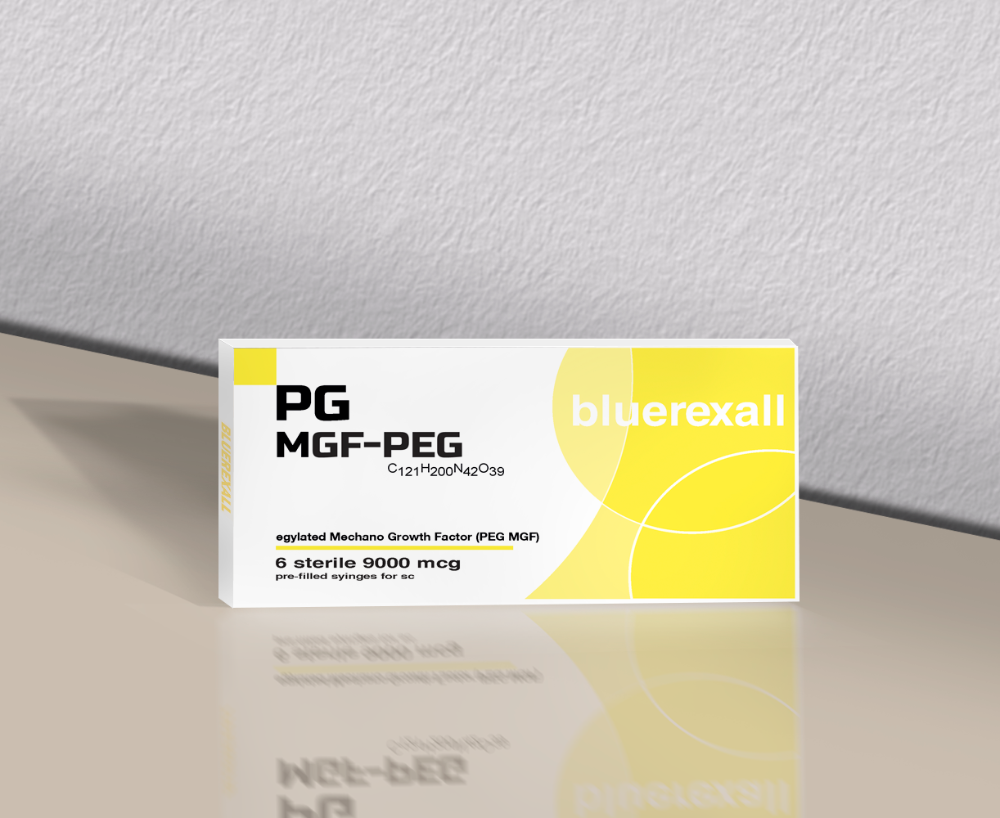
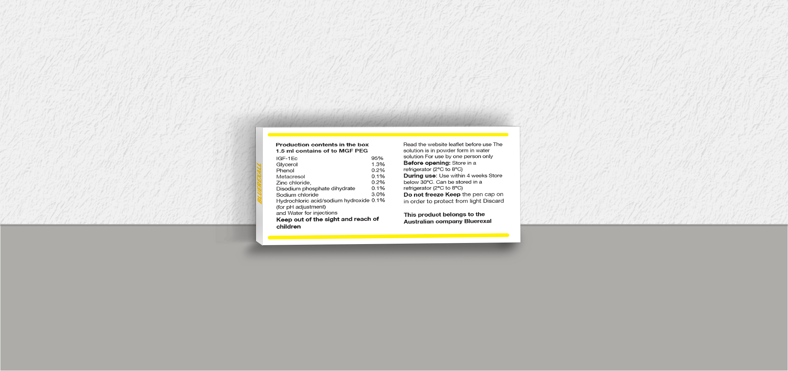
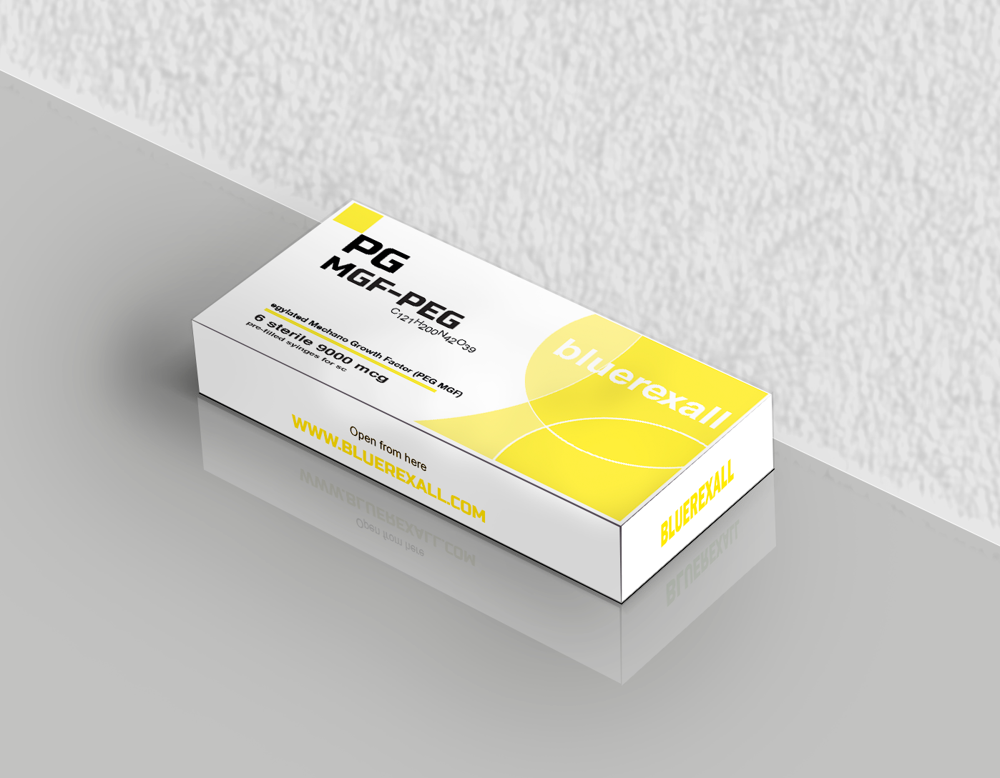
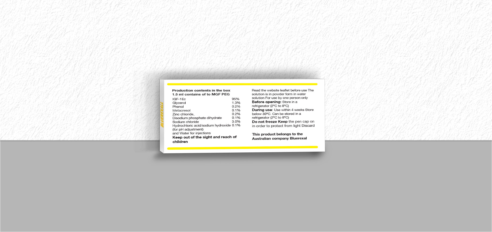

Research Use Only - Biotechnology Peptide




MGF-PEG (Mechano Growth Factor Pegylated) is a research peptide studied in muscle regeneration and growth signaling pathways. It is strictly for laboratory research use only and not intended for human consumption.